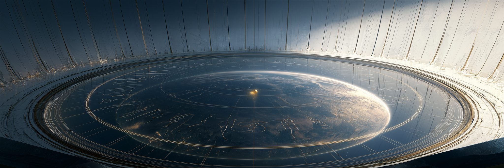
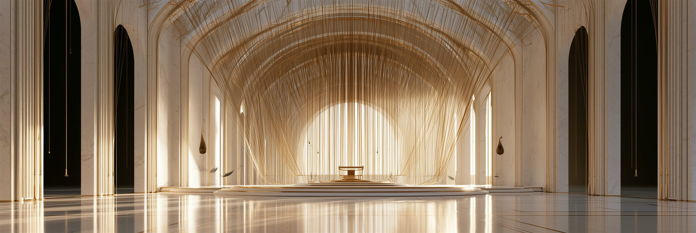
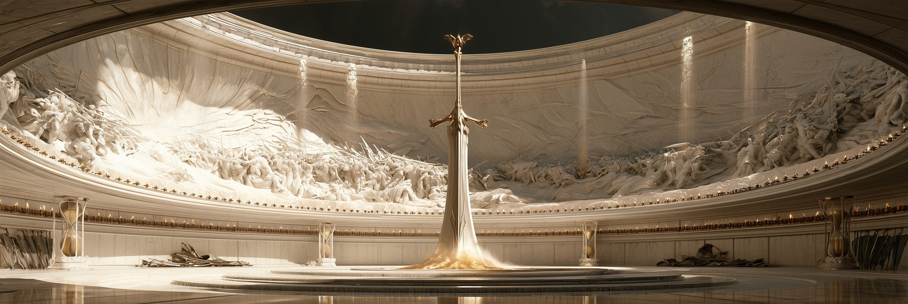
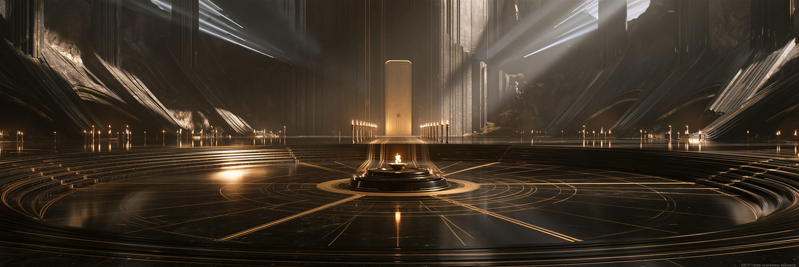
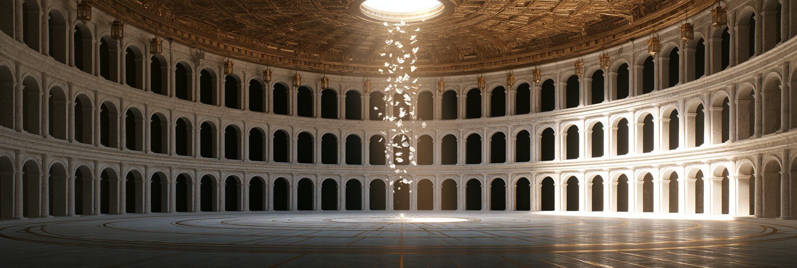

콘텐츠
본편 다섯 막, 그리고 하늘의 계급을 거슬러 올라가는 레이드. 설정이 아니라 설계 문서다 — 개발이 진행되며 계속 바뀐다.
본편과 레이드
천족의 계급 구조가 그대로 콘텐츠 티어가 된다. 각 격파가 세계 상태를 영구히 바꾼다.
본편 — 심판관 스쿨드까지
본편은 셋을 미완으로 남긴다 — 심판, 마왕의 입, 하늘 너머. 심판은 취소된 것이 아니라 연기되었을 뿐이고, 마왕은 여전히 말하지 못한다. 바르가 살아 있기 때문이다.
레이드 — 계급을 거슬러 올라간다
최종 레이드 — 옴팔로스 토벌전 · 20인
무대는 중추 옴팔로스. 배경에 원반 세계 전체가 접시처럼 펼쳐져 보인다 — 플레이어는 싸우는 내내 자기 세계를 내려다보며 싸운다.
R4에서 장부가 부서져 다음 심판을 산정할 수 없게 되었다. 그래서 그녀는 창세 이래 처음으로 직접 손을 쓰려 한다 — 시스템이 아니라, 손으로. 최종 레이드는 토벌전인 동시에 그 집행을 막는 싸움이다.
셀레스티엘 독대
사대천사가 살아 있는 동안 쓰러뜨릴 수 없다. 버티는 것이 목표다. 딜을 넣지 못하고 시간을 산다.
사대천사 각 1
격파할 때마다 레이드 버프 + 셀레스티엘 디버프 1중첩. 그리고 해당 파티가 A에 난입한다.
플로우 — 다섯 개의 전장이 하나로 접힌다
| 단계 | 내용 |
|---|---|
| 입장 · 배치 | 20인이 4인 × 5파티로 갈라진다. 사대천사의 예배소 넷 — 이니티움 · 팍툼 · 오르도 · 파툼 — 이 옴팔로스 중심을 네 방위에서 둘러싸고, A 파티만 중앙으로 걸어 들어간다 |
| 1막 · 다섯 전장 | B~E 동시 개전, A는 독대를 버틴다. 가브리엘이 살아 있는 동안 신에게 피해가 0이므로 B의 진행 속도가 전체의 속도를 정한다 |
| 격파 ×4 | 격파마다 ① 레이드 버프 ② 셀레스티엘 디버프 1중첩 ③ 해당 파티가 A에 난입 — A는 4 → 8 → 12 → 16 → 20인으로 불어난다 |
| 2막 · 강등전 | 4중첩 — 권능이 세계에 작용하지 못한다. 세계 안의 한 개체가 된 그녀와 20인의 결전 |
| 종막 | 권능이 벗겨진 뒤 — 그녀는 처음으로 개인을 본다 |
A 파티 — 독대의 설계
아레나는 「오쿨루스 OCULUS」 — 세계를 굽어보는 신좌(神座). 옴팔로스의 중심이자, 바닥 전체가 하나의 거대한 원형 관측 창이다. 수정 바닥 아래로 원반 세계 전체가 펼쳐져 보인다 — 플레이어는 자기 세계를 내려다보는 눈 위에 서서, 자기 세계를 밟고 신과 싸운다. 그녀의 발은 바닥에 닿지 않고, 기재의 조문은 그 유리 위에 — 즉 세계 위에 직접 — 적힌다.

딜을 넣지 못한다. 버티는 것이 일이고, 시간을 사는 것이 기여다. 설계는 세 개의 축으로 돈다.
기재(記載)
바닥에 금빛 조문이 문장으로 적혀 나가고, 문장이 완성되는 순간 쓰인 대로 집행된다. 글자 위에 서면 적히는 속도가 느려진다. 그녀의 말은 위조할 수 없다 — 그러나 늦출 수는 있다.
폐기 승인
그녀는 싸우는 내내 다른 한 손으로 폐기 승인서를 쓴다. 서명이 완성되면 전멸. 사대천사가 하나 끊길 때마다 기재가 흔들려 게이지가 잠시 멈춘다.
B~E — 네 개의 아레나
각 아레나는 해당 대천사의 권능을 그대로 조작 규칙으로 쓴다. 인물 상세는 천족 편 사대천사에.

「비롯 지우기」
「태동하는 시원(始原)의 성소」. 이곳에서는 모든 것이 시작 직전에 멈춰 있다 — 떨어지기 직전의 물방울, 터지기 직전의 씨앗, 켜지기 직전의 초. 팽팽한 금실 수천 가닥이 그 정지들에서 비롯되어 벽 너머 세계로 흘러나간다. 세계의 모든 문장이 여기서 첫 글자를 얻는다.원인 삭제 — 사람이 원인인 공격이 전부 무효이므로, 발굴한 자율 병기 장착자만 피해를 넣을 수 있다. 그녀는 주기적으로 파티원 하나의 「가장 최근 행동」을 지운다 — 버프·설치물·이동이 소급 취소된다. 파훼: 지워질 행동을 미리 설계해 버리는 수를 만들어둔다.

「선고」
「침묵하는 종언(終焉)의 전당」. 이 방의 시제는 하나뿐이다. 초는 전부 밑동까지 탔고, 모래는 전부 흘러내렸고, 깃발은 개켜져 있다. 중앙에는 마지막 휘두름을 끝낸 대검이 꽂혀 있다. 그리고 벽의 부조는 지금 벌어지는 이 전투의 결말을 먼저 조각하고 있다 — 다 새겨지기 전에 끝내야 한다.완료형 문장으로 공격을 예고하고, 예고는 반드시 적중한다. 무적기는 무효 — 문장은 바뀌지 않는다. 바꿀 수 있는 것은 목적어뿐이다: 선고를 다른 파티원에게 인계할 수 있다. 탱커 로테이션이 곧 공략이다.

「기록점」
「정지된 찰나의 회랑」. 이곳에서는 무엇도 동시에 일어나지 않는다. 꽃잎 하나가 낙하의 열 순간으로 나뉘어 공중에 정지해 있고, 물방울도 먼지도 메아리도 줄을 서서 차례를 기다린다. 발소리조차 한 박자 늦게 따라온다.일정 주기로 아레나 전체가 기록점 시점으로 되감긴다 — 체력·위치·쿨다운 전부. 파훼: 기록점 직전이 진짜 승부다. 최적의 상태로 기록되도록 스킬과 자리를 재단한다. 나쁜 상태로 기록되면, 그 실수를 반복해서 되돌려받는다. 행정도시 오르디네의 이름이 여기서 왔다 — 빌린 쪽은 그 사실을 모른다.

「예언」
「수렴하는 운명의 제단」. 이 방에 갈림길은 애초에 그려지지 않았다. 바닥의 모든 이음매와 모든 빛과 모든 기둥의 열이 한 점을 향해 그려져 있다. 어느 방향으로 걸어도 같은 곳에 도착한다. 촛불들은 단 한 번도 흔들린 적 없다 — 흔들릴 확률까지 지워졌으므로.각자의 다음 행동이 머리 위에 미리 공표되고, 예언대로 행동하면 처벌받는다. 합리적인 수는 전부 읽힌다 — 힐러가 딜을 넣고 탱커가 도망치는 비합리의 창을 파티가 직접 설계해야 한다.
강등전 — 세계 안의 한 개체
그녀의 권능은 사대천사를 통해서만 세계에 작용한다. 넷이 끊기면 세계 안의 한 개체로 강등된다. 그때 비로소 칼이 닿는다.
| 격파 | 레이드 버프 | 셀레스티엘 디버프 |
|---|---|---|
| 가브리엘 · 원인 | 공격의 원인이 삭제되지 않는다 → 피해 적용 개시 | 원인 통제력 상실 |
| 미카엘 · 결과 | 회피·무적 재작동 | 확정 적중 권능 상실 |
| 라파엘 · 순서 | 되감김 면역 | 자기 부활 불가 |
| 우리엘 · 필연 | 크리티컬·회피 판정 복구 | 행동 예측 상실 → 패턴 무작위화 |
우리엘 격파의 역설이 그대로 강등전의 정체성이 된다 — 신이 예측 능력을 잃는 대신 행동이 무작위해진다. 더 쉬워지지 않고 더 읽기 어려워진다. 4중첩이 쌓인 그녀는 회피할 수 있는 적, 피해가 들어가는 적, 부활하지 못하는 적, 그리고 예측할 수 없는 적이 되어 20인 앞에 선다.
연출 지침 — 강등의 순간, 그녀의 발이 처음으로 바닥에, 오쿨루스의 창 위에 닿는다. 균일광이 꺼지고 처음으로 그녀의 그림자가 생긴다. 그리고 그 그림자는, 유리 아래의 세계 위로 떨어진다.